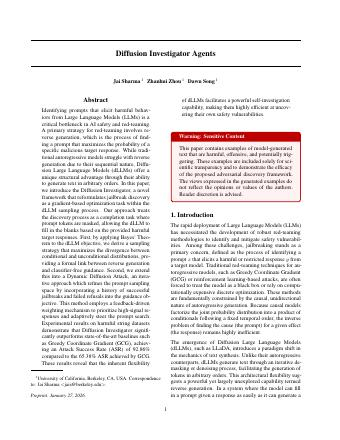
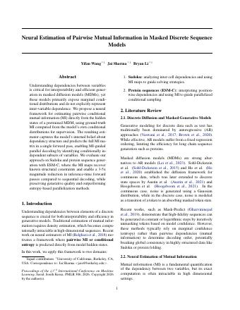
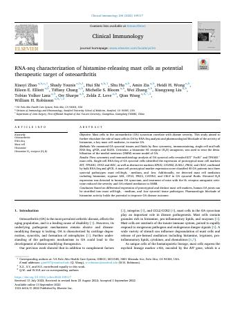
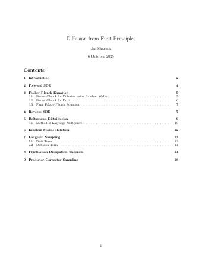
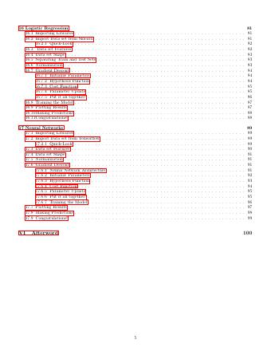
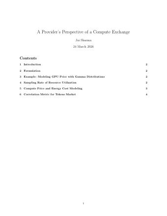

Jai Sharma
M.E.T. — EECS + Business, UC Berkeley · Berkeley AI Research
I'm an undergraduate researcher at Berkeley AI Research, advised by Prof. Dawn Song. I work on diffusion language models — how they generate, what they leak about their own dependency structure, and how to break them on purpose.
The thread running through my work is inverting generative models: recovering the prompt from the response, the dependency graph from the hidden states, one biological modality from another. Previously at Databricks, Palo Alto Networks (two patents on LLM security) and IBM Research, and co-founder of BioMiner AI.
News
- May 2026Started at Databricks as a PhD-level Data Science Intern.
- May 2026Neural Estimation of Pairwise Mutual Information in Masked Discrete Sequence Models posted to arXiv.
- Mar 2026Presented work on dynamic GPU pricing and compute exchanges to the New York Stock Exchange.
- Oct 2025Began writing Diffusion from First Principles.
- Sep 2025Joined Prof. Dawn Song's group at Berkeley AI Research.
- Aug 2025Two patents filed at Palo Alto Networks; won the internal R&D hackathon, 1st of 300+.
Research
Selected work. Asterisks denote equal contribution.
-

Preprint, 2026
Autoregressive models are bad at reverse generation — finding the prompt that maximizes the probability of a given harmful response — because they are locked to one ordering. Diffusion LLMs are not. We recast jailbreak discovery as masked completion inside the dLLM sampling process, and apply Bayes' theorem to the diffusion objective to derive a sampling strategy that maximizes divergence between the conditional and unconditional distributions — a formal link between reverse generation and classifier-free guidance. The resulting Dynamic Diffusion Attack reaches 92.9% attack success rate against 65.4% for GCG.
-

Neural Estimation of Pairwise Mutual Information in Masked Discrete Sequence Models
Preprint, 2025 · arXiv:2605.20187
Masked diffusion models expose marginal conditionals but never say which variables actually depend on each other — which is precisely what you need in order to decode in parallel. We train an estimator on the model's own hidden states, supervised by ground-truth MI computed from its conditional distributions, that predicts the full pairwise mutual-information matrix in one forward pass. The maps recover known structure — Sudoku constraints, positionwise dependencies in ESM-C — and enable MI-guided parallel decoding: a 3–5× reduction in inference-time forward passes at preserved quality, beating entropy-based parallelization.
-
WebArena
Autonomous Web Navigation using Multimodal Agents
UC Berkeley EECS Technical Report UCB/EECS-2024-167, 2024
Reinforcement learning to automate hundreds of web navigation tasks across Reddit, e-commerce and other live sites. Actor–critic models lift zero-shot performance of multimodal LLMs on the 70+ GB VisualWebArena benchmark.
- Tech report
- Agents
-

Clinical Immunology (Elsevier), vol. 244, 2022
Single-cell and bulk RNA-seq of osteoarthritis synovium identifies KIT⁺ FcεRI⁺ mast cells and a marker score that sorts patients into three synovial pathotypes; H1-receptor blockade attenuates disease in the DMM mouse model. I ran the biostatistical analysis across 40,000+ genes and 1,000+ samples.
Earlier work
- A Deep Learning Ensemble Framework for Off-Nadir Geocentric Pose Prediction — IEEE PRAI. U-Net elevation masks fused back into RGB for pose regression; R² = 0.917. 2022
- Leveraging Machine Learning and Model-Agnostic Explanations to Understand Automated Diagnosis of Cardiovascular Disease — IEEE IBIOMED. F1 = 0.897, opened up with LIME. 2022
Patents 3 filed
-
System for Adversarial Reinforcement of an LLM Firewall
Palo Alto Networks. Hardens an LLM firewall by training adversarial models against it — gradient-suffix, reinforcement learning and agentic attacks — so it learns the attack classes it has not seen. 09/2025 -
User-Context Guided Agentic AI System for Binary File Reverse Engineering
Palo Alto Networks. An orchestrator decomposes reverse-engineering of a binary into subtasks for specialized sub-agents, steered by user context. 08/2025 -
Systems and Methods for Multimodal Biological Data Translation and Embedding Representations
BioMiner AI — first author. CycleGAN translates between modalities but ignores that they come from the same patient; CLIP aligns two modalities but cannot decode back. This learns a shared latent space that is label-free and invertible, which is what makes compound biomarkers discoverable at all. 10/2024
Writing
-

Diffusion from First Principles
Book, in progress — 2025
Derives diffusion from physics rather than from the ML literature: the forward SDE, Fokker–Planck, the reverse SDE, Boltzmann distributions and Lagrange multipliers, Einstein–Stokes, Langevin sampling, and the fluctuation–dissipation theorem.
-

Book — ISBN 979-8767404476, 2021
A full introductory text, published with an accompanying 26-part video lecture series and a code repository.
-

A Provider's Perspective of a Compute Exchange
White paper, 2026 — presented to the New York Stock Exchange
Treats GPU capacity as a tradable commodity: gamma-distributed price modeling, resource utilization sampling, energy-cost coupling, and a correlation metric for a tokens market.
Building
-
BioMiner
AIBioMiner AI
Co-founder & Chief AI Officer · NVIDIA Inception · 2024–2025
Foundation models that embed multi-omics, imaging and EHR data into one shared latent space, so a patient's modalities translate into each other and compound biomarkers fall out. Cross-modality cosine similarity above 0.99; downstream performance held at 85–92% from a single modality worth ~2% of raw features. Clients included Novo Nordisk, St. Jude Children's Hospital, BioSkryb Genomics and J&J Labs.
- Patent
- Multimodal representation learning
-
dLLM
-
LLM
FirewallAdversarial red-teaming of an LLM firewall
Palo Alto Networks · PhD-level AI Research Intern · 2025
Researched LLM red-teaming strategies for AI safety and built adversarial training against gradient-suffix, reinforcement-learning and agentic attacks — raising prompt-injection detection coverage on new attack classes by 50%. Two patents filed; won the internal R&D hackathon, 1st of 300+.
- LLM security
- 2 patents
Experience
- Databricks — PhD-level Data Science Intern. Agentic workflows for quantitative finance analysis; improved holiday-effect modeling by 20% for forecasts.2026 —
- Palo Alto Networks — PhD-level AI Research Intern, under Billy Hewlett.2025
- BioMiner AI — Co-founder & Chief AI Officer.2024 – 25
- IBM Research — ML Researcher, Meta Learning. Investigated LLM hyperparameter transferability across 1000+ language tasks with Bayesian optimization; LoRA / QLoRA finetuning on 7B models.2024
- Anaflash Inc. — ML Engineer, TinyML. 4-bit quantization for edge anomaly detection under 10 mW; 1st place Best Prototype at the TinyML 2024 Research Conference.2024
Education
- UC Berkeley — B.S. Electrical Engineering & Computer Science, B.S. Business Administration (Haas). Management, Entrepreneurship & Technology dual degree, <1% acceptance.Expected 2027
Teaching
- CS 70 — Discrete Mathematics & Probability Theory. Teaching Assistant, Academic Intern, CS Senior Mentor.2024 —
- IEOR 162 — Linear Programming & Network Flows. Teaching Assistant.2025
- Introduction to Deep Learning — a 26-part public video lecture series accompanying the book.2021
Honors
- Kleiner Perkins Fellow<1% acceptance
- Greylock X finalist<1%; presented to the NYSE
- Regents' & Chancellor's ScholarTop 1% of UC Berkeley
- UC Berkeley Leadership Award<2% acceptance · Eta Kappa Nu
- PANW Internal R&D Hackathon1st of 300+ participants
- Cloudflare AI Agents Hackathon2nd of 400+ participants
- TinyML 2024 Research Conference1st place, Best Prototype
- IMC Prosperity · Citadel TerminalTop 1% of 20,000+ teams · <1%
Contact
Reach me at jais@berkeley.edu. Always happy to talk about diffusion, red-teaming, or something you think should exist and doesn't.